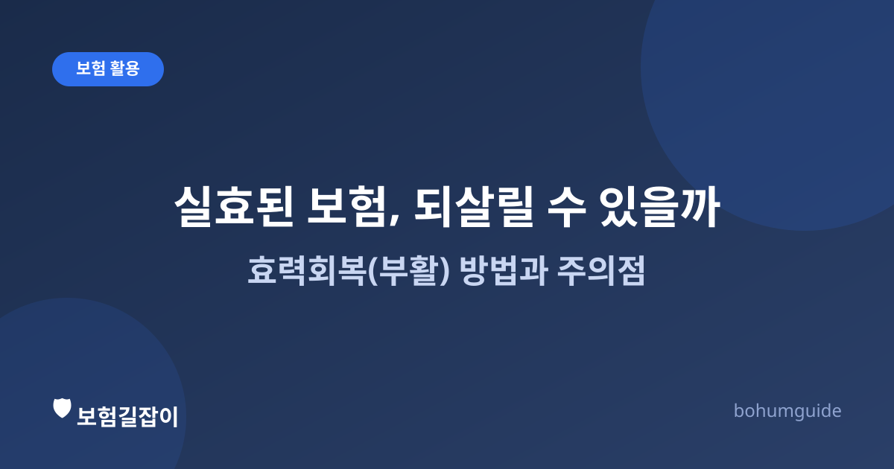

보험료 미납으로 실효됐다면? 효력회복(부활) 방법과 주의점
깜빡하고 보험료를 못 냈는데 계약이 실효됐다는 안내를 받으셨나요? 무조건 새로 가입해야 하는 것은 아닙니다. 조건이 맞으면 '효력회복(부활)' 제도로 원래 계약을 되살릴 수 있습니다.

✍️ 편집자 참고: 본 글은 초안입니다. 실효 후 부활 가능 기간, 필요 서류, 심사 기준은 보험사·상품에 따라 다를 수 있으므로 게시 전 최신 약관 기준으로 검수·수정해 주세요.
보험료 납입을 일정 기간 이상 미루면 계약이 실효(효력 상실) 상태가 됩니다. 실효란 계약 자체가 사라지는 '해지'와는 다르게, 보장이 멈춘 채로 계약이 남아 있는 상태에 가깝습니다. 이 상태에서 정해진 기간 안에 밀린 보험료와 이자를 내면, 처음 가입했을 때와 같은 조건으로 계약을 되살리는 효력회복(부활)을 신청할 수 있습니다.
실효는 왜, 어떻게 일어날까
보험료 자동이체가 잔액 부족으로 실패하거나 카드 만료 등으로 결제가 안 될 때가 있습니다. 보통 보험사는 납입최고기간(유예기간)을 두고 몇 차례 재시도·안내를 하며, 이 기간이 지나도록 납입이 안 되면 계약이 실효 처리됩니다. 실효가 되면 그 시점부터는 사고나 진단이 발생해도 보험금이 지급되지 않는다는 점이 가장 큰 문제입니다. 즉 보험료를 계속 내고 있다고 생각했는데 실제로는 보장이 끊긴 상태로 몇 달을 지냈을 수도 있다는 뜻입니다.
이런 이유로 자동이체 계좌 잔액이나 결제 수단은 주기적으로 확인하는 것이 좋고, 실효 안내 문자·앱 알림을 받았다면 미루지 말고 바로 확인하는 습관이 중요합니다.
효력회복(부활)의 조건과 절차
일반적인 부활 가능 기간
대부분의 상품은 실효일로부터 일정 기간(통상 2~3년 수준으로 안내되는 경우가 많으며 상품마다 다름) 안에 부활을 신청할 수 있도록 하고 있습니다. 이 기간을 넘기면 부활이 불가능해지고, 새 계약으로 재가입하는 방법만 남게 됩니다. 정확한 부활 가능 기간은 가입한 상품의 약관에 명시되어 있으므로 반드시 확인해야 합니다.
| 구분 | 보험 나이·조건 | 건강 상태 심사 | 기존 보장·특약 |
|---|---|---|---|
| 효력회복(부활) | 원래 가입 시점 조건 유지 | 미납 기간에 따라 간단 심사~정식 심사 | 기존 특약 그대로 유지 가능 |
| 신규 재가입 | 현재 시점 나이로 새로 산정(보험료 인상 가능) | 새로 정식 심사(건강 변화 반영) | 단종된 상품·특약은 재가입 불가 |
부활이 유리한 경우가 많은 이유가 여기에 있습니다. 특히 오래전 가입해 예정이율이 높거나 지금은 판매하지 않는 특약이 포함된 상품이라면, 실효 후 새로 가입하는 것보다 부활을 통해 기존 조건을 지키는 편이 나을 수 있습니다.
부활 신청 시 알아 둘 점
- 미납된 보험료와 그에 대한 이자를 함께 납입해야 하는 경우가 많다.
- 실효 기간이 짧으면 서류 없이 간단히 처리되지만, 기간이 길어지면 건강상태 고지 등 별도 심사를 다시 거칠 수 있다.
- 심사 과정에서 그사이 진단받은 질병이 새로 발견되면, 해당 부분이 보장에서 제외되거나 부활이 거절될 수 있다.
- 부활 승인 전까지는 여전히 보장이 없는 상태이므로, 신청 후 결과가 나올 때까지 공백을 인지하고 있어야 한다.
부활 대신 해지환급금을 받는 게 나을 때도 있다
실효 후 오래 방치해 이미 보장 필요성이 사라졌거나, 더 나은 조건의 상품으로 갈아탈 계획이 있다면 무조건 부활만이 답은 아닙니다. 남은 해지환급금을 확인하고, 부활 시 예상 보험료와 새로 가입할 때의 보험료를 함께 비교해 보는 것이 합리적입니다. 급전이 필요해 미납이 반복되는 상황이라면 계약대출(약관대출)로 완납을 유지하는 방법도 함께 검토해 볼 수 있습니다.
실효를 애초에 막으려면
가장 좋은 대응은 실효 자체가 일어나지 않도록 예방하는 것입니다. 이체 계좌의 잔액을 급여일 등과 맞춰 관리하고, 카드로 납입 중이라면 카드 만료 시점을 미리 확인해 두는 것이 도움이 됩니다. 또한 일시적으로 소득이 줄어드는 시기에는 보험료 납입을 잠시 미룰 수 있는 납입유예(자동대출납입) 등 제도를 상품에 따라 이용할 수 있는 경우도 있으니, 미납이 예상된다면 실효되기 전에 먼저 보험사에 문의하는 편이 안전합니다.
요약
보험료 미납으로 계약이 실효되면 그 순간부터 보장이 멈춥니다. 정해진 기간 안이라면 밀린 보험료와 이자를 내고 효력회복(부활)을 신청해 기존 조건 그대로 계약을 되살릴 수 있지만, 실효 기간이 길어지면 건강 재심사를 거치거나 부활이 거절될 수 있습니다. 실효 안내를 받았다면 기간 내에 빠르게 확인하고, 부활과 재가입·해지 중 무엇이 유리한지 비교해 결정하는 것이 좋습니다.
참고할 수 있는 공신력 있는 자료
- 금융감독원 — 금융·보험 소비자 보호 및 안내
- 금융소비자 정보포털 파인 — 보험 계약 상태·조건 조회
- 생명보험협회 — 생명보험 제도·약관 안내
본 정보는 일반적인 안내이며, 실효·부활 관련 정확한 조건과 절차는 가입하신 상품의 약관과 보험사 상담을 통해 반드시 확인하시기 바랍니다.